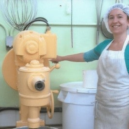

Porat Vegetarian Delights is above all a culinary family adventure. Christa and Shaul Porat founded the company in 1984. It all started in the kitchen of their apartment in Montreal with the making of vegetable pies. Over the years, the business has grown wonderfully. Shaul and Christa moved their business to a beautiful kitchen in Saint-Joseph-Du-Lac. In 2009, Sara, Aviram and Ramya Porat, their children, took on the mission. True to their roots, they continue to make the food that they love.
Porat Vegetarian Delight is devoted to enriching peoples’ lives by offering a line of high-quality products that is nutritious and delicious. Initially vegetarian, it is with pride that their products are now 100% vegan.
The Porat Family has always desired to develop products that they would have loved, as consumers, to see in the grocery stores. In fact, there are a few anecdotes on the subject. For example, the végé pâté was created because Christa wanted to vary the sandwiches she prepared for her children's school lunches. The Cajourella was born out of Aviram's unconditional love of pizza. As a vegan, he created the cheese he dreamed of to garnish his crust.
Porat products are made to make your life easier. They fit very well with your meals without you needing to change your eating habits. They are perfect for food lovers who wish to vegetarianize their diet as well as for vegans who want to be able to cook their grandmother's spaghetti recipe. With family or friends, one thing is sure, you will enjoy it!